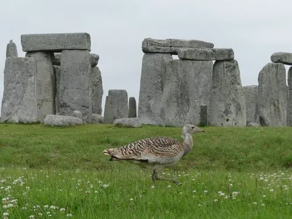

鸟类 · 动物界
大鸨 Otis tarda

中国体型最重的飞鸟，雄鸟体重可达 15 kg，颈下长有胡须状饰羽，在北方草原上集群越冬，是国家一级保护动物。
- 分类
- 门脊索动物门纲鸟纲目鸨形目科鸨科属鸨属
- 栖息环境
- 开阔的草原、荒漠草原和农田，喜欢地势平坦、视野开阔的短草环境
- 地理分布
- 欧亚大陆草原带，中国北方从内蒙古、黑龙江到西北地区有繁殖或越冬种群
- 保护级别
- IUCN 易危（VU）；中国国家一级保护动物
物种志
大鸨是现存体重最大的飞鸟之一，雄鸟体长 90–105 cm，体重 6–18 kg；雌鸟明显小巧，体长约 60–80 cm，体重 3–5 kg。雄鸟头颈灰色，颈下有两簇白色须状羽，繁殖期喉部鼓胀、尾羽上翻，显得威风凛凛；背部黄褐色并密布黑色横纹，腹部白色，翅膀宽大，飞行时可见明显的白色翼斑。
大鸨分布于欧亚大陆的草原、荒漠草原和农田，中国内蒙古、黑龙江、吉林、河北、山西、陕西等地有繁殖或越冬种群。它们以植物嫩叶、种子和谷物为主食，也吃昆虫和小型脊椎动物。繁殖期雌鸟在地面浅坑中产卵 2–3 枚，孵化 25–28 天，育雏由雌鸟独自承担。大鸨起飞前需要一段助跑，飞行时拍翅缓慢，冬季常结成小群活动。由于草原开垦和偷猎，全球种群持续下降，被世界自然保护联盟列为易危物种，中国将其列为国家一级保护动物。
形态与习性
- 食性植物嫩叶、种子、谷物，也吃昆虫和小型脊椎动物
- 体长雄鸟 90–105 cm，雌鸟 60–80 cm
- 体重雄鸟 6–18 kg，雌鸟 3–5 kg
- 翼展190–260 cm，雄鸟更大
- 繁殖每窝 2–3 枚卵，孵化 25–28 天
- 寿命野外约 15–20 年
- 集群冬季结成数十只的小群在农田和草原越冬
趣味知识
- 雄性大鸨体重可达 15 kg 以上，是能飞行的鸟类中最重的种类之一。
- 雄鸟颈下的两簇须状羽在求偶时竖起，像一把白色的胡须。
- 大鸨在中国古籍中被称为“地鵏”，因肉质鲜美曾遭到大量猎捕。
- 大鸨起飞前需要助跑，飞行时双翅拍动缓慢而沉稳。